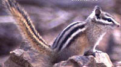

Білка Довгоноса розмірами подібна до нашої білки, хвіст приблизно вдвічі коротший за тіло. Забарвлення верху червоно-коричневе, боки світло-коричневі, черевна сторона майже біла. Короткий пухнастий хвіст, темного кольору з білим кінцем. Дуже характерна витягнута мордочка та довгі витягнуті нижні різці, які діють як щипці, коли білка схоплює комах (основу її харчування). Крім того, довгоноса білка поїдає фрукти. Жувальні зуби звірятка дуже великі. Довга мова може далеко висовуватися з рота, що допомагає цій білці діставати з різних тріщин і щілин мурах, термітів дрібних жуків. Довгоноса білка - мешканець лісів півдня Малаккі та островів Суматри та Калімантану. Багато часу проводить на землі, але може добре пересуватися і деревами. Гнізда розташовуються частіше в наземних сховищах (серед бурелому, скель та каміння) або в низьких дуплах.